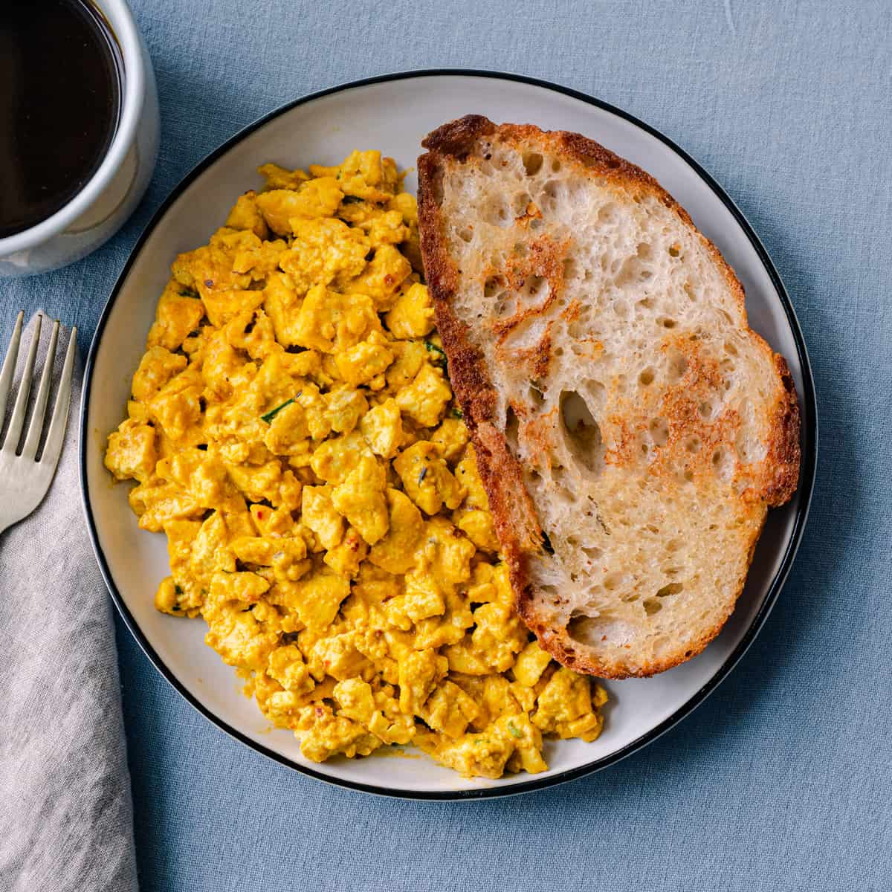

Tofu Scramble

The Tofu Scramble is an absolutely delicious dish that can be enjoyed at any time of the day.
You can eat it with toast, as pictured above, or by itself. It
is truly a vegan culinary masterpiece.
Ingredients
- Firm tofu
- Nutritional yeast
- Turmeric
- Salt
- Pepper
- Smoked paprika
- Olive oil
Preparation
- Fork the tofu or cut it into cubes after draining. Put
it into a bowl.
- Add all spices to taste to the bowl and mix.
- Add the olive oil to a pan on medium heat.
- Cook the tofu for five minutes, mixing often.
Back to Recipes